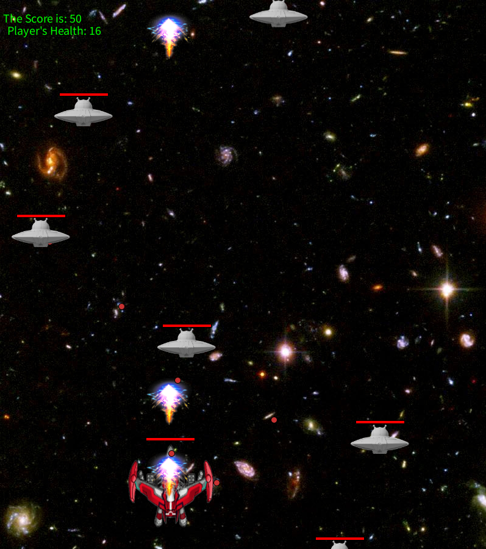

Game Design • Animation • Visual Storytelling
Hi, I'm Mulin Zhang
I am a student designer interested in game design, animation, and interactive experiences. This portfolio shows some of my creative work and course projects.
Projects

Kinetic Typography Animation
A short animation project that uses typography and motion to express emotion and rhythm.

Air Combat Game Prototype
A small game prototype focusing on player control and combat mechanics.

Interactive Orchard Visual Design
An interactive visual design built in Eclipse, exploring how different elements respond to user input.
Bio
I am a student interested in game design, visual storytelling, and interactive experiences. I am especially drawn to visual design and narrative development, and how they work together to shape player emotions.
I am also interested in roles such as game design and gameplay planning, including testing mechanics and iterating on rules. In the future, I hope to work in the game or animation industry, focusing on creating engaging experiences through both visuals and storytelling.